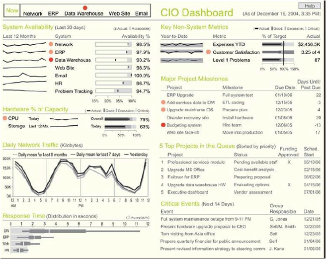
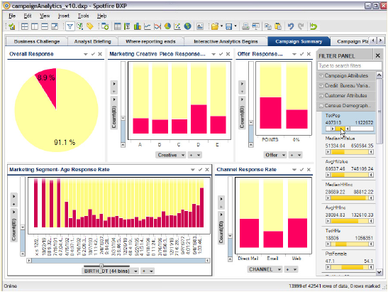
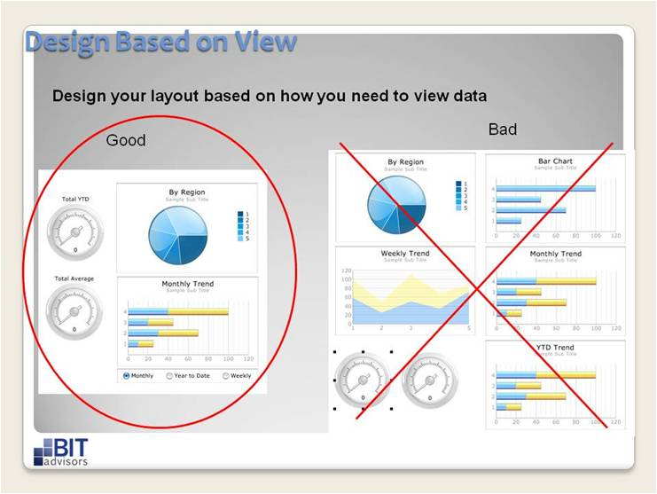

Business Intelligence
Wat?
Een grafisch en visueel overzicht van een bepaald proces of groep van processen.
Wanneer?
Als de gebruiker snel inzicht nodig heeft om beslissingen te nemen en/of acties te starten.
Regels en richtlijnen

- Beperk het aantal metingen tot 4 à 6 per scherm;
- Voorzie drill down (meer details);
- Gebruik eenvoudige grafische voorstellingen:
- balkgrafieken lijngrafiek, tabellen zijn meestal goed;
- taartgrafieken zijn moeilijk te interpreteren;
- cirkelvormige meters zien er mooi uit maar bieden meestal weinig informatie en nemen veel plaats in;
- Voorzie filters zodat de gebruiker zelf de informatie kan bepalen (interactiviteit, niet enkel statisch);
- Betrek de gebruikers bij het ontwerp, zij hebben het laatste woord;
- Pas het ontwerp aan op de noden van de gebruikers (niet iedereen heeft hetzelfde nodig);
- Zorg dat de gegevens actueel zijn, pas ze aan als het voor de gebruiker nodig is (real time hoeft meestal niet buiten het operationele niveau);
- Plaats globale informatie links, meer details meer naar rechts op het scherm (leesrichting);
- Als het van toepassing is, gebruik grafische overzichten;
- Zorg dat alle nuttige informatie voor de gebruiker beschikbaar is in het dashboard. Een dashboard waarbij gebruikers niet de informatie vinden die ze nodig hebben, raakt snel in onbruik;
- Zorg ervoor dat alle informatie binnen één scherm past. Scrollen, zowel horizontaal als verticaal, vermindert de bruikbaarheid en het overzicht;
- De juiste kleuren en combinaties gebruiken (bv slechte resultaten in fellere kleuren, noodzaak voor actie in het kader van 'management by exception)';
- Voorzie voldoende witruimte om het dashboard overzichtelijk en inzichtelijk te houden;
- Zorg dat de inhoud overeenkomt met het doelpubliek en de taken die zij moeten uitvoeren;
- Zorg dat de dimensies en andere karakteristieken duidelijk zijn (bv strategisch, kwalitatief of kwantitatief ...). Dit helpt de gebruiker om de overzichten juist te interpreteren;
- Zorg ervoor dat minder nuttige informatie te bereiken is, maar belast het scherm daar niet mee (progressive disclosure toepassen).
- Drill down met meer dan drie niveaus (de gebruikers verliezen de weg);
- Onjuiste actulasiering van de gegevens (bv om de drie seconden voor de CEO veroorzaakt een onrustig beeld, maakt actie moeilijk);
- Grafische overzichten gebruiken waar dit niet nodig of zinvol is (een tabel volstaat ruimschoots);
- Teveel kleuren gebruiken (leidt af van de boodschap);
- Verkeerde kleuren gebruiken (culturele context respecteren)
- Let op met kleine verschillen en nuances, de interpretatie loopt dikwijls fout - zeker op strategische dashboards;
- Het scherm overladen met details (hoop: betere interpretatie, resultaat: minder overzicht en inzicht).
Voorbeelden

Dit dashboard bevat veel informatie maar waarschijnlijk teveel om overzichtelijk te zijn. Nagaan bij uw doelpubliek welke informatie kritisch is, is absoluut noodzakelijk.

Filters aanbieden kan noodzakelijk zijn om de nodige inzichten te verschaffen.

In het linkse voorbeeld staat de globale informatie links, de meer gedetailleerde rechts. In het rechtse voorbeeld is het juist omgekeerd.
Referenties


Information dashboard design - Stephen Few ISBN 0-596-10016-7, O'Reilly
Created with the Personal Edition of HelpNDoc: Single source CHM, PDF, DOC and HTML Help creation